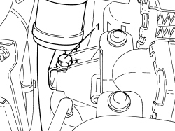
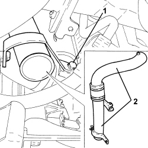
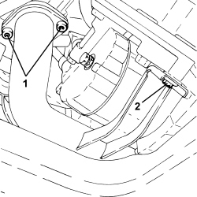
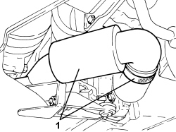

1048B10 RIGID SUPPLY PIPE (ONE) BETWEEN TURBOCHARGER AND HEAT EXCHANGER -R.R.
- Path
- Procedures > 10 ENGINE > 1048 ENGINE AIR SUPPLY CIRCUIT > 1048B PRESSURE AIR CIRCUIT > 1048B10 RIGID SUPPLY PIPE (ONE) BETWEEN TURBOCHARGER AND HEAT EXCHANGER -R.R.
- Kind
- repair procedure (removal / refitting; the operation number is the code)
- Applies to
- engines: 1.9 JTD 8v, 1.9 JTD 16v, 2.4 JTD 20v; all production periods
- Interactive page
- https://sloeber94.github.io/elrnDB-fCrm/en/#/194002165
Applies to: engines: 1.9 JTD 8v, 1.9 JTD 16v; all production periods
 Removing
Removing
 Refitting
RefittingOp. 1016A10 SOUND-PROOFING COVER - R.R
Op. 1048B19 TURBOCHARGER AIR OUTLET HOSE -R.R.
Op. 1048A42 SLEEVE FROM FLOW METER TO TURBO CHARGER AIR INLET PIPE - R + R
Op. 7055B54 UNDER ENGINE PROTECTION/GUARD - R.R.
Op. 1048B17 HEAT EXCHANGER AIR INLET HOSE - R.R.
Op. 7040D30 ENGINE BAY FRONT BEAM COVER - R R
1. Undo the upper bolt securing the rigid air supply pipe between the turbo and the heat exchanger.

Applies to: engines: 1.9 JTD 8v, 1.9 JTD 16v; all production periods
1. Undo the lower bolt securing the rigid air supply pipe between the turbo and the heat exchanger.
2. Remove the two rigid air supply pipes between the turbo and the heat exchanger.
- At the bench, if necessary, loosen the bands and separate the rigid air supply pipes between the turbo and the heat exchanger from the connecting hose.

Applies to: engines: 1.9 JTD 8v, 1.9 JTD 16v; all production periods
Refitting
Removing- Join the rigid air supply pipes between the turbo and the heat exchanger to the connecting hose and tighten the bands.
- Place the two rigid air supply pipes between the turbo and the heat exchanger in their housings.
- Tighten the lower bolt securing the rigid air supply pipe between the turbo and the heat exchanger.
- Tighten the upper bolt securing the rigid air supply pipe between the turbo and the heat exchanger.
Op. 7040D30 ENGINE BAY FRONT BEAM COVER - R R
Op. 1048B17 HEAT EXCHANGER AIR INLET HOSE - R.R.
Op. 7055B54 UNDER ENGINE PROTECTION/GUARD - R.R.
Op. 1048A42 SLEEVE FROM FLOW METER TO TURBO CHARGER AIR INLET PIPE - R + R
Applies to: engines: 2.4 JTD 20v; all production periods
Removing
Refitting- Position the vehicle on a lift.
Op. 7055B54 UNDER ENGINE PROTECTION/GUARD - R.R.
1. Undo the bolts securing the rigid air supply pipe between the turbocharger and the heat exchanger, turbocharger side.
2. Undo the bolt securing the rigid air supply pipe between the turbocharger and the heat exchanger, air conditioner compressor side.

Applies to: engines: 2.4 JTD 20v; all production periods
1. Loosen the collar and disconnect the air delivery sleeve between the turbocharger and the heat exchanger, sleeve side, and remove.

Applies to: engines: 2.4 JTD 20v; all production periods
Refitting
Removing- Place the rigid air delivery pipe between the turbocharger and the heat exchanger back in its housing ,connect it to the sleeve and tighten the band.
- Tighten the bolt securing the bracket for the rigid air supply pipe between the turbocharger and the heat exchanger, air conditioner compressor mount side.
- Tighten the bolts securing the rigid air supply pipe between the turbocharger and the heat exchanger, turbocharger side.
Op. 7055B54 UNDER ENGINE PROTECTION/GUARD - R.R.
- Remove the vehicle from the lift.
Topics linked from this page (6)
- 1016A10 SOUND-PROOFING COVER - R.R
- 1048A42 SLEEVE FROM FLOW METER TO TURBO CHARGER AIR INLET PIPE - R + R
- 1048B17 HEAT EXCHANGER AIR INLET HOSE - R.R.
- 1048B19 TURBOCHARGER AIR OUTLET HOSE -R.R.
- 7040D30 ENGINE BAY FRONT BEAM COVER - R R
- 7055B54 UNDER ENGINE PROTECTION/GUARD - R.R.
Topics that link to this page (6)
- 1048B14 AIR DELIVERY HOSE BETWEEN TURBOCHARGER AND HEAT EXCHANGER - REPLACE
- 1048B50 TURBOCHARGER INTERCOOLER - R + R
- 1088B20 ENGINE COOLING RADIATOR - R + R
- 1088E11 FANS WITH SINGLE ENGINE DUCT - R+R
- 5040A20 AIR CONDITIONING COMPRESSOR - R+R - INCLUDES FLUID LEVEL CHECK AND TOP UP IF NECESSARY
- 5530A10 ALTERNATOR - R+R